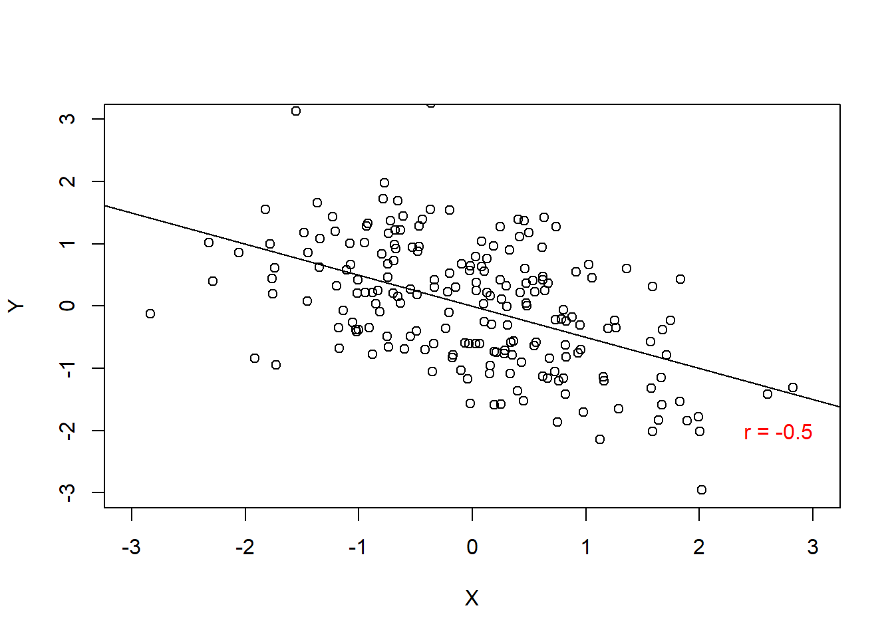
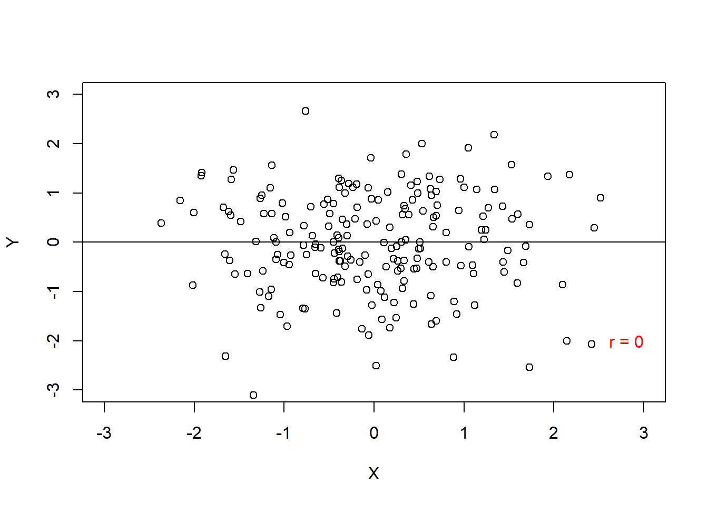
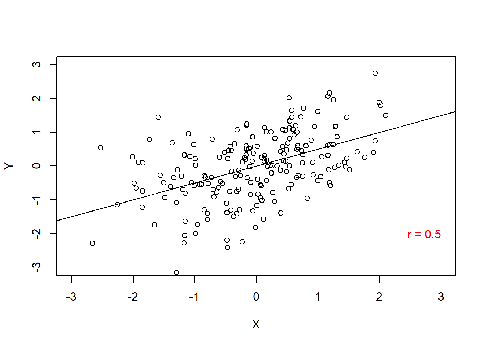

11 Korrelaatio
Mittausasteikot: Välimatka- ja suhdeasteikko
Korrelaatio on mitta kahden muuttujan yhteisvaihtelusta. Nimi tulee englannin sanoista co-relation, eli yhteissuhde. Korrelaatiomittoja on monia, joista tässä luvussa käsittellään vain Pearsonin korrelaatiokerrointa. Luvussa 9 käydään läpi ei-parametrinen vaihtoehto Pearsonin kertoimelle, Spearmanin rho.
Pearsonin korrelaatiokerroin \(r\) on standardisoitu versio kovarianssista. Jotta ymmärrtäisi Pearsonin kertoimen, on siis hyvä ensin ymmärtää kovarianssi.
11.1 Kovarianssin määritelmä
Muistutuksena (ks. Alaluku 6.6), varianssin määritelmä oli kaikkien arvopisteiden neliöerot keskiarvoon, jaattuna vapausasteilla.
Kovarianssi ilmaisee kahden muuttujan yhteisvaihtelua yhden muuttujan vaihtelun sijaan. Koska jonkun asian nostaminen toiseen potenssiin on sama asia kuin sen kertominen itsellään, kovarianssissa korvataan toinen kertomista toisen muuttujan arvopisteiden eroilla keskiarvoon. Toisin sanoen, lasketaan jokaiselle datariville sen ero keskiarvoon kummallakin muuttujalla, ja kerrotaan nämä tulokset yhteen. Samankaltaisuus näkyy hyvin kaaviossa:
\[ \text{Var} = \frac{\sum{(x-\bar{x})(x-\bar{x})}} {n-1}, \text{Cov} = \frac{\sum{(x-\bar{x})(x-\bar{y})}} {n-1} \tag{11.1}\]
Jos varianssi (\(\text{Var}\)) edustaa yhden muuttujan keskivertaista vaihtelua, kovarianssi (\(\text{Cov}\)) edustaa kahden muuttujan välistä vaihtelusuhdetta. Kovarianssi siis osoittaa, miten toisen muuttujan arvot muuttuvat kuin ensimmäinen muuttuu.
Positiivinen kovarianssi ilmaisee, että ensimmäisen muuttujan erotessa keskiarvosta, toinen muuttuja eroaa keskiarvosta samaan suuntaan. Negatiivinen kovarianssi taas ilmaisee, että toisen muuttujan ero keskiarvoon menee toiseen suuntaan kuin ensimmäisen muuttujan ero keskiarvoon.
Voit ajatella nämä suorina käyrinä pistekaaviolla: positiivisessa kovarianssissa käyrä osoittaa ylöspäin alavasemmalta; negatiivisessa kovarianssissa käyrä osoittaa alaspäin ylävasemmalta; ja nollakovarianssissa käyrä on vaakasuora (ei suhdetta). Katso esimerkkikuvat alla (Kuva 11.1)1:
1 Kuvissa esitetään korrelaatiokertointa \(r\), mutta ajatus on täysin sama.



Kovarianssi mitataan samoissa yksiköissä kuin alkuperäiset muuttujat, mutta kerrottuna toistensa kanssa. Jos molempien muuttujien mittayksikkö on metriä, kovarianssi on \(\text{metri}*\text{metri}\), eli neliömetriä. Jos kuitenkin ensimmäinen muuttuja olisi metreissä mutta toinen euroissa, kovarianssin mittayksikkö olisi “eurometrejä”.
Kovarianssin käyttö on jokseenkin hankalaa, koska mittayksiköt eivät ole standardisoituja eivätkä usein tarkoita mitään todellista. Tämän takia kovarianssi standardisoidaan, jolloin saadaan Pearsonin korrelaatiokerroin \(r\).
11.2 Korrelaatiokertoimen mallioletukset
Korrelaatiokertoimella on suhteellisen vähän oletuksia, mutta ne vaikuttavat suurestikin kertoimen luotettavuuteen. Nämä ovat: mittataso, täydellisesti paritettu data, ääripääpisteiden poissaolo, (virheiden) normaalijakautuminen ja lineaariteetti.
11.2.1 Mittataso
Kuten aikaisemmin mainittu, Pearsonin \(r\) toimii vain muuttujille, jotka ovat välimatka- ja suhdeasteikolla. Tämä juontuu laskutavasta, jossa käytetään keskiarvoa ja keskihajontaa, joita voi vain käyttää näillä tasoilla.
Jos muuttujasi ovat järjestysasteikolla, voit käyttää Spearmanin korrelaatiokertointa tai khiin neliötä. Jos muuttajasi taas ovat vain luokitteluasteikolla, khiin neliö on paras vaihtoehto.
Jos käytät vääriä tasoja, korrelaatiokerroin on virallisesti tulkitsematon. Järjestysasteikolla tehty korrelaatio voi myös arvioida mittaa suurestikin yläkanttiin, joten näillä kannattaa olla varovainen. Spearmanin korrelaatiokerroin on varmempi työkalu tässä tilanteessa, ja khiin neliö helpommin tulkittavissa.
11.2.2 Täydellisesti paritettu data
Jokaisella rivillä tulisi olla arvo molemmilla muuttujilla. Tämä juontuu siitä, että kaikkia arvoja käytetään ja summataan yhteen.
Jos sinulla on puuttuvaa dataa, se ei sinänsä ole vielä vaarallista. Huomaa kuitenkin, että mitä enemmän dataa puuttuu, sitä huonommin korrelaatiokerroin kuvastaa koko datajakaumaa.
Yleensä tapana on jättää pois kaikki rivit joilla on epätäydellistä dataa - ilmoita siksi aina, kuinka suuri \(n\) sinulla on korrelaatiokertoimen laskennassa! Muista myös korjata \(n\) itse laskukaavassa datamäärän mukaan.
11.2.3 Ääripääpisteiden poissaolo
Ääripääpisteet vaikuttavat suuresti keskiarvoon, ja siksi ne vaikuttavat myös suuresti korrelaatiokertoimeen. Niiden poisto on erittäin suotavaa (ks. Alaluku 5.2).
11.2.4 Normaalijakautuminen
Pearsonin \(r\)-suureen oikeellisuuden takaamiseksi molempien muuttujien keskiarvot tulisivat tulla normaalijakautumasta. Tämä voidaan olettaa suurissa otoksissa.
Jos otoksesi kuitenkin on pieni, ei-parametrinen testi (Spearmanin rho) on parempi vaihtoehto.
Tämän lisäksi korrelaatiokerroin olettaa, että virhemittaus on normaalijakautunut. Voit tarkistaa oletuksen laskemalla jokaisen rivin muuttujien erotukset keskiarvoihin \(\bar{x}-x\) ja \(\bar{y}-y\), ja tarkistaa niiden histogrammit (pylväskaaviot; ks. Alaluku 1.4.1). Molempien virhekaavioiden tulisi asettua jokseenkin normaalikäyrän mukaisesti, jossa yleisin virhearvio tulisi olla nolla.
Jos näin ei ole, valitse taas ei-parametrinen testi.
11.2.5 Lineariteetti
Koska korrelaatiokerroin on lineaarinen malli, se toimii parhaiten lineaaristen suhteiden mallintamisessa. Jos muuttujasuhde on epälineaarinen, korrelaatiokerroin ei välttämättä “näe” suhdetta. Jos suhde esimerkiksi on täydellisen positiivisen parabolinen (nousee tiettyyn pisteeseen asti ja laskee sen jälkeen, symmetrisesti), korrelaatiokerroin tulee osoittamaan nollakorrelaatiota - vaikka suhde selkeästi löytyy!
Tarkista lineaarisuus pistekaaviolla (Alaluku 1.4.5).
Jos suhde ei ole lineaarinen, joudut joko muuntamaan muuttujat epälineaarisesti (esim. logaritmilla tai potenssilla), tai hakeutumaan epälineaaristen mallien maailmaan.
11.3 Korrelaatiokertoimen laskeminen
Kaikille näille laskuille löytyy valmiit LAMBDA-kaavat (Luku 19).
Kovarianssi standardisoidaan jakamalla se molempien muuttujien keskihajonnan kertomalla. Matemaattisella yksinkertaistamisella kaavasta tulee:
\[ r = \frac{\text{Cov}} {s_x s_y} = \frac{\sum{(x-\bar{x})(x-\bar{y})}} {(n-1) s_x s_y} \tag{11.2}\]
Pearsonin \(r\) sijoittuu välille \([-1; 0; 1]\), vaihdellen täydellisestä negatiivisesta korrelaatiosta nollakorrelaation kautta täydelliseen positiiviseen korrelaation. Kun \(r = -1\), muuttujien välillä on täydellinen negatiivinen korrelaatio: kun ensimmäinen muuttuja nousee arvossaan, toinen muuttuja laskee yhtä paljon (suhteessa mitta-asteikkoon; ks. Kuva 11.1). Vastakohtana muuttujat nousevat ja laskevat samassa vauhdissa kun \(r = 1\). Nollakorrelaation kohdalla \(r = 0\) muuttujien välillä ei ole tilastollista lineaarista suhdetta, eli yhden muuttujan muuttuminen ei näy millään tavalla toisessa muuttujassa.
Korrelaatiokertoimelle voidaan laskea merkitsevyystaso. Tämä tehdään muuntamalla kerroin t-arvoksi, jonka kriittisen rajan voi tarkistaa kriittisten arvojen taulukosta. Muuntaminen on suhteellisen yksinkertainen:
\[ t_r = \frac{r \sqrt{N-2}} {\sqrt{1-r^2}} \tag{11.3}\]
Jakolaskun yläpuolella: kerro korrelaatiokerroin otoskoon minus kaksi neliöjuurella. Jakolaskun alapuolella: ota korrelaatiokertoimen neliö, vähennä se yhdestä, ja ota tuloksen neliöjuuri.
Korrelaatiokertoimelle voi myös laskea luottamusvälin. Tuolloin kertoimen pitää kuitenkin ensin muuntaa z-arvoksi (ei t-arvoksi), sekä laskea kertoimen keskivirhe.
\[ \begin{split} z_r = \frac{1}{2}\log_e(\frac{1+r}{1-r}) \\ \text{SE}_{z_r} = \frac{1}{\sqrt{N-3}} \end{split} \tag{11.4}\]
Z-arvon laskukaava on hieman hankala. Laske ensin korrelaatiokerroin plus yksi sekä korrelaatiokerroin minus yksi, ja jaa ensimmäinen toisella. Ota sitten tuloksen luonnollinen logaritmi. Viimeiseksi, kerro tulos puolella, eli 0,5.
Z-arvon keskihajonta on paljon yksinkertaisempi: vähennä otoskoosta kolme ja ota tuloksen neliöjuuri. Jaa sitten yksi tällä tuloksella, eli hae tuloksen inverssi.
Nämä voidaan sitten syöttää suoraan luottamusvälin kaavaan valitsemallamme alfa-arvon z-rajalla (ks. Alaluku 8.3). Jos esimerkiksi \(\alpha = 0.05\), niin z-raja on \(z = 1.96\), jolloin laskukaavasta tulee:
\[ \text{CI}_{z_r}^{\alpha = 0.05} = z_r \pm (1.96 \times \text{SE}_{z_r}) \tag{11.5}\]
Huomaa kuitenkin, että arvot ilmaistaan vielä z-arvoissa, ei Pearsonin \(r\)-arvossa! Arvot voidaan kuitenkin kääntää takaisin \(r\)-arvoiksi seuraavalla kaavalla2:
2 Kaava on käytännössä sama kuin \(z_r\), mutta ratkottu \(r\)-arvolle. Jos olet haka matemaatikko, voit tarkistaa tämän!
\[ r = \frac{e^{2z_r}-1}{e^{2z_r}+1} \tag{11.6}\]
Ensin, laske kaksi kertaa z-arvo. Nosta sitten Eulerin luku tähän potenssiin. Vähennä tuloksesta yksi, ja jaa tämä tulos aikaisemmalla potenssituloksella plus yksi.
11.4 Korrelaatiokertoimen laskeminen Excelissä
Korrelaatiokertoimen voi onneksi laskea hyvin yksinkertaisesti Excelissä yhdellä kaavalla:
PEARSON(matriisi1; matriisi2)
Määrittele vain, mitkä matriisit sinulla on käytössä.
Valitettavasti kertoimen merkitsevyyden tarkistaminen taas ei ole implementoitu Excelissä. Käytä valmiita LAMBDA-kaavoja (Luku 19) laskeaksesi kertoimen p-arvon t-muunnoksen avulla.
LAMBDA-kaavoina löytyy myös \(r\)-arvon z-muunnoksen tekemiseksi sekä \(z_r\)-arvon muuntamiseksi takaisin \(r\)-arvoksi. Käytä näitä laskeaksesi luottamusvälin valitsemallasi alfatasolla.
Huomaa, että tarvitset neljä listattua LAMBDA-funktiota tähän: z-arvon lasku, keskivirheen lasku, luottamusvälin lasku, sekä lasku, joka muuntaa z-arvon takaisin r-arvoksi.
Huomaa myös, että luottamusvälin laskukaava (KORR.Z.CI) palauttaa kaksirivisen matriisin - ensimmäinen arvo on luottamusvälin yläraja, toinen arvo on alaraja. Jos tarvitset luottamusvälin sarakkeisiin rivien sijaan, laita funktio TRANSPONOI-funktion sisälle.
11.5 Korrelaatiokertoimen raportointi
Raportoi mieluisesti seuraavat tiedot:
Pearsonin suure \(r\)
Otoskoko \(n\)
Merkitsevyys \(p\)
Luottamusväli \(\text{CI}\)
Korrelaatiokertoimelle ei tarvitse laskea testisuuretta, koska se on suuremitta itsessään.